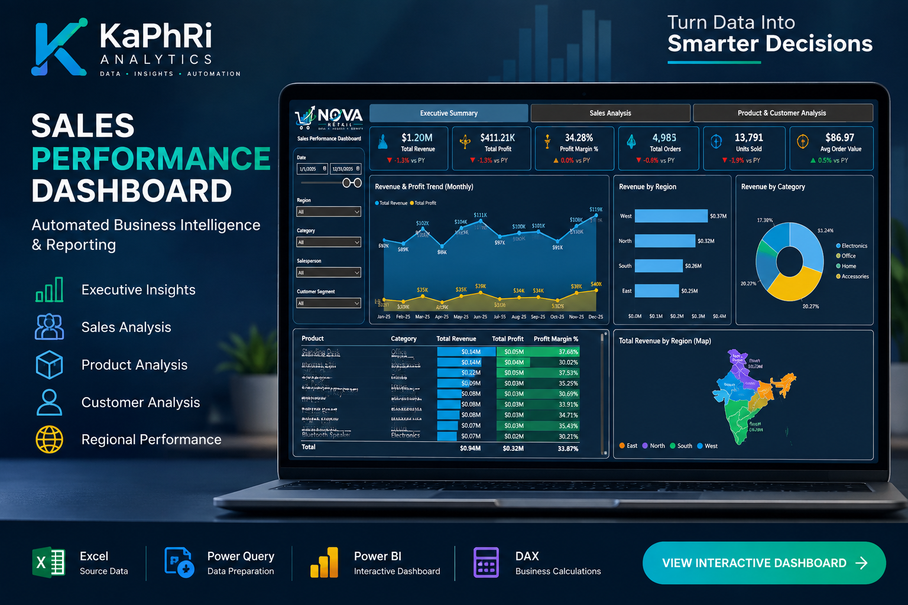

Business Intelligence
Power BI dashboards, management reporting, data models, DAX measures and interactive KPI analysis.
KaPhRi Analytics transforms complex and fragmented business data into clear insights, automated reports and interactive dashboards using Power BI, Excel and modern analytics tools.

From raw data preparation to executive dashboards and recurring report automation, KaPhRi Analytics supports the complete reporting workflow.
Power BI dashboards, management reporting, data models, DAX measures and interactive KPI analysis.
Transform business data into meaningful trends, performance indicators and actionable insights for decision-making.
Automate recurring Excel and reporting workflows using Power Query, Power Pivot, VBA and reusable data processes.
An automated business intelligence solution that consolidates monthly Excel sales files and turns them into an interactive management and sales reporting experience.
Designed to reduce manual data consolidation, improve reporting accuracy and give management clear visibility into revenue, profit, customers, products, salespeople and regional performance.
Technology is selected around the reporting problem—not the other way around.
KaPhRi Analytics specializes in data analytics, business intelligence and reporting automation. We help businesses transform complex and fragmented data into clear, reliable and actionable reporting solutions using Power BI, Excel, Power Query, Power Pivot, VBA and DAX.
Define the business questions, reporting pain points and decisions the solution needs to support.
Clean, combine and structure source data into a reliable analytical foundation.
Build measures, KPIs and analytical logic that turn data into meaningful information.
Create clear, maintainable dashboards and automated reporting workflows for business users.
Let's discuss how KaPhRi Analytics can help turn your data into a more efficient reporting, automation and decision-making solution.